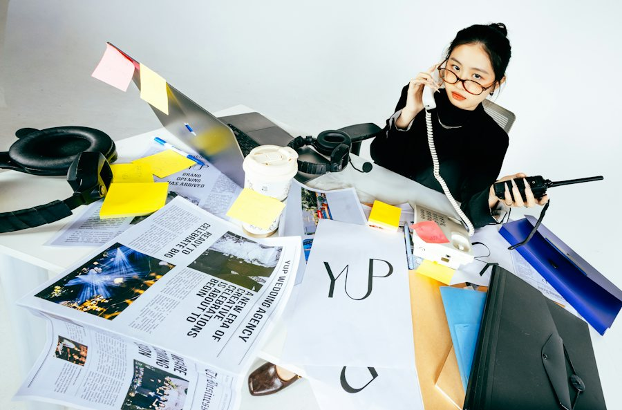
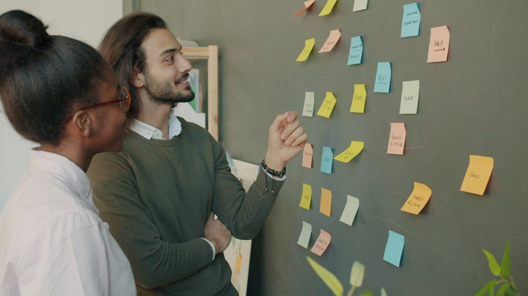

Warm-up · Everything is urgent

You can only do one thing first. What is it, and what is the reason?
What do you do FIRST?
Teacher notes · §1 Warm-up
Pedagógica
- Lee el escenario en voz alta y deja 10 segundos de silencio. Nivel B2: no apuntes vocabulario, solo escucha qué estructura usan para dar su razón.
- Si dicen "because" sin más, perfecto. Si dicen "for that" o "por eso", recast: "Ah, so that's why you start there." Sin corregir en público.
- Poll: en grupo, votan en el chat o levantando la mano; en 1:1 el alumno vota y tú votas distinto para abrir la discusión.
- Máximo 4 minutos. Cero gramática todavía; llega en §3.
Engagement
- "Everything is urgent" es algo que todos viven. Pregunta: "¿Cuál fue tu lunes más caótico?"
- Cierra con: "Today you'll learn to explain why something comes first."
Crecimiento
- Anota la razón exacta que dio el grupo. Al final (§8) la comparas con la misma razón dicha con because / so.
- Riesgo: Seguro. Temperatura: Mild.
Vocabulary · 12 words for problems

Tap to flip · listen to the word and the example
0 / 12 flippedMatch the problem with its cause
0 / 6 pairsConfidence Wager
1. Bet 1 to 3 points that you can use the word in YOUR OWN sentence. 2. Say the sentence. 3. If it's yours and it works, you win the bet. If not, you lose it.
Teacher notes · §2 Vocabulary
Pedagógica
- Voltea cada tarjeta: tú dices la palabra, el alumno repite y luego da su propio ejemplo antes de leer el de la tarjeta.
- Match: causa y problema deben decirse en voz alta con "because" antes del clic.
- VOC-03 Confidence Wager (APUESTA): la oración tiene que ser del alumno, no la del ejemplo. Si es suya y funciona, gana lo apostado; si no, lo pierde.
- Alumno con miedo al error: activa Private bets (apuesta escrita y privada).
- Pronunciación: priority /praɪˈɔːrəti/ (acento en -OR-), deadline (acento en DEAD), root cause dos golpes fuertes.
Engagement
- Cierra en voz alta: "Final bank: __ points. Best bet: __."
- "Twelve words, and every one of them is something you've said in Spanish this week."
Crecimiento
- Las otras 6 palabras (urgent / important · workload · delay · affect · main problem · It depends on…) se recuperan en Grammar, Reading y Speaking: ≥70% del léxico reaparece.
- Estas 12 palabras abren todo el Bloque 1.
Grammar · Problem, cause, result
Read the chat. Which three connectors explain what happened?

Why is the festival late?
The crew arrived late because there was road work.
And the gates?
We couldn't finish the sound check, so the gates stayed closed. That's why everybody is waiting outside.
One problem, three ways to explain it
1 · The cause
We missed the deadline because the data arrived late.
2 · The result
The data arrived late, so we missed the deadline.
3 · The result, new sentence
The data arrived late. That's why we missed the deadline.
| Statement, negative, question | Notice | |
|---|---|---|
| + | The crew arrived late because there was road work. We couldn't start, so the gates stayed closed. | Never use because and so in the same sentence. |
| − | We didn't finish because we didn't have enough people. | The negative can be the problem or the cause. |
| ? | Why did it happen? Because the inspector was late. What was the result? | Answer with because. Ask for the result with What was the result? |
Today you only explain the problem, the cause and the result. Choosing between options and recommending come in later blocks.
¿Qué es? Tres conectores para explicar un problema: because da la causa, so da el resultado dentro de la misma oración, y That's why da el resultado en una oración nueva.
¿Cómo se usa? Causa: We were late because the truck broke down. Resultado: The truck broke down, so we were late. Resultado en oración nueva: The truck broke down. That's why we were late.
¿Para qué hoy? Para explicar un problema en tres pasos claros (qué pasó, por qué, qué resultó) en vez de decir solo "it was a problem".
Cuidado: en español decimos "porque… por eso…". En inglés no se juntan: Because it was late, so we left. Usa uno o el otro.
Choose: because · so · That's why
Ladder Sentences: climb four rungs
Rungs 0 / 12Mistakes at this level
Teacher notes · §3 Grammar
Pedagógica
- Un solo punto de lengua: problema → causa → resultado. Explicación continua ≤5 min; el botón en español está oculto por defecto.
- Practice A es mecánica (≤1/3 del bloque). GRM-05 Ladder Sentences (ESCALADA, etapa meaningful): la misma oración sube peldaños: problema, + causa, + resultado, + acción. Cada peldaño es punto. Pide siempre que digan la oración completa en voz alta.
- Error prioritario del nivel: mezclar because y so en la misma oración. Márcalo en voz alta cada vez.
- Límite del nivel: sin hipótesis ("if…", segundo condicional) ni "as a result of". No los pidas aunque el alumno los ofrezca.
Engagement
- "You already explain problems in Spanish. Today you do it in three clear steps in English."
- Cierre en voz alta: "I climbed __ rungs."
Crecimiento
- Reaparece en Listening (2 veces cada conector), Reading, Speaking y Mission.
- S2 agrega "The main problem is…" y S4 integra todo en "Root Cause Detective".
Reading · Where do we start on Monday?
Hi team,
Our main problem this week is the workload. The supplier report is urgent because the client meets us on Tuesday. The new schedule is important, but it can wait until Thursday. Also, two people are out sick, so we're behind on the invoices.
That's why I'm asking you to decide: what comes first, and why? Please reply with your priority and one reason before 5 p.m.
Thanks, Marisol
Find the facts
Teacher notes · §4 Reading
Pedagógica
- Primera lectura en silencio (1 min) buscando solo causas y resultados. Segunda: el alumno subraya mentalmente because, so y That's why (hay uno de cada).
- Texto de 70 palabras, nivel B2.2 (tope 100). Contiene urgent / important, workload, behind.
- Pregunta oral extra: "What would YOU reply to Marisol?" Esa respuesta prepara la Mission.
Engagement
- "This is the kind of email you receive on a Monday, and today you can answer it in English."
Crecimiento
- Tarea opcional: escribir la respuesta a Marisol con una prioridad y una razón (because). Se revisa al inicio de S2.
Listening · Two versions of Saturday

The Saturday festival opened late. Two coordinators left voice notes for their manager, Rosa. They tell the same story differently.
Practice audio (browser voice). Final audio: record with ElevenLabs.
What are both voice notes about?
Find the three differences, then decide who is more reliable
Version A · Priya
Festival coordinator · Indian English · female · natural paceVersion B · Tom
Volunteer supervisor · US English · male · natural paceListen · repeat · record your best
Teacher notes · §5 Listening
Pedagógica
- LIS-03 Two Versions (IMPOSTOR): dos guiones del mismo incidente. Primera escucha: tarea global. Segunda: cazar 3 discrepancias de hecho (no de estilo). Después deciden qué versión sostiene mejor y la defienden con dos citas.
- Guiones de 184 y 184 palabras, B2 (180–300). Cada uno trae because, so y That's why al menos 2 veces, más delay, workload, root cause, priority, affect y under pressure.
- Para grabar: Priya = inglés indio, mujer, ritmo natural · Tom = inglés de EE. UU., hombre, ritmo natural. Un acento no nativo (cumple 1 de cada 3 del programa).
- Answer key. Global: both explain why the festival opened late. Discrepancias: (1) retraso: two hours vs ninety minutes · (2) causa: road work and the stage crew vs the safety inspector · (3) visitantes: about 300 went home vs about 80 waited and nobody left. Extra: workload (six people vs twelve volunteers). Más confiable: Version B (da horas exactas, cifras y evidencia; A usa "I think" y "around").
Engagement
- "Who do you believe, Priya or Tom? That's the whole class discussion in one question."
- Anota cuántos cazaron las 3 discrepancias en la segunda escucha.
Crecimiento
- "In the mission you decide which story your team tells, and you explain it with because, so and That's why."
Speaking · What comes first?
1. Rank the six situations privately. You have 30 seconds, no notes. 2. Your team needs ONE order. Defend yours with because, so and That's why. 3. Only the final consensus counts.
My private order
Our team order
12 questions · always 2 follow-ups

Teacher notes · §6 Speaking
Pedagógica
- SPK-10 Blind Ranking (RANKING): 30 segundos de preparación en silencio y después producen sin notas. Solo cuenta el consenso del equipo; obliga a justificar y a ceder en inglés.
- Grupo: salas de 3, cada quien ordena en privado y el equipo llega a UN orden. 1:1: el alumno ordena, tú ordenas distinto en privado y negocian.
- No hay respuesta correcta: la justificación es el producto. Exige because / so / That's why en cada defensa.
- Anota 2 aciertos y 3 errores repetidos (mezclar because + so) para §8. Entre rondas usa las 12 preguntas: nunca aceptes respuesta de una palabra.
Engagement
- Cierra en voz alta: "Our team order is __ because __."
- "The best moment is when someone changes their mind in English."
Crecimiento
- Puntaje: se gana por producir lengua, nunca por contestar rápido.
- Riesgo: Seguro (casos ficticios, nadie queda expuesto frente a un jefe).
Mission · The Monday Briefing

You are the team leader. Three problems landed on your desk before 9 a.m.
Brief your team on each one: the main problem, the cause (because), the result (so or That's why), and what comes first.
Group: each case goes to one student in a breakout room. Your partner asks one question per case. Rotate every 3 minutes.
1:1: you brief the teacher after each case. The teacher asks one question about the cause.
Success: 3 briefings, each with the problem, a cause with because, a result with so or That's why, and one clear priority.
Teacher notes · §7 Mission
Pedagógica
- Marca cada movimiento solo cuando el alumno lo dice sin leer la tarjeta.
- Evidencia observable: checklist del maestro (causa con because correcta, resultado con so / That's why, prioridad con razón, respuesta a la pregunta del compañero). Se registra en el portal.
- No interrumpas: el feedback va en §8. Tarjetas ficticias, de máximo 100 palabras (tope B2).
Engagement
- Anuncia en voz alta: "__ of 12 moves. Mission complete!"
Crecimiento
- "In Session 2 you describe problems more precisely with 'The main problem is…'."
- Misión conectada con la tarea final del nivel: priorizar y dar una recomendación simple.
Wrap-up · Better the second time
✓ Success
↑ Upgrade
✎ Repair
↻ 2nd try
Repeat one briefing with the teacher. Use the upgrades. Same problem, better English.
60 seconds · 5 questions
My second briefing is better because…
You can explain a problem, its cause and its result.
Homework: write a 5-sentence briefing about a real problem at work or at home. Use because, so and That's why at least once each. Next: Session 2.
Teacher notes · §8 Wrap-up
Pedagógica
- Máximo 2 aciertos y 3 correcciones de alto valor, anónimas. Luego segundo intento de un briefing contigo.
- Exit quiz en voz alta: el alumno dice la respuesta antes del clic.
Engagement
- Compara con la razón que anotaste en §1: "Minute 1: a guess. Minute 58: a clear explanation."
Crecimiento
- Registra en el portal: checklist de la misión, puntos del Wager, peldaños del Ladder y resultado del Blind Ranking.